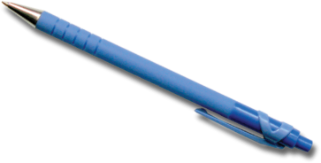
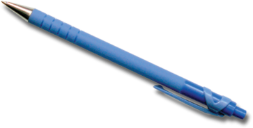

-
Voorpret 2013, de Eindredactie Film kijkt uit naar…
Heb jij je hele agenda al vol gepland deze zomer? De Eindredactie Film heeft al voorpret en weet wel raad met de regenachtige dagen. We kunnen namelijk niet wachten om de volgende films in de bioscoop te zien..!
-
Actrice Ilse van Kollenburg: “Als je 45 sponsoren een plekje wilt geven in je voorstelling, dan wordt het echt te commercieelâ€
Actrice Ilse van Kollenburg financiert haar voorstelling Salon voor 1 door alle 45 losse minuten afzonderlijk te laten sponsoren via haar eigen platform Sponsoreenminuut.nl.
Door: Claire Goossens Lees verder
-

The Great Gatsby is een visueel sterk, maar kitscherig spektakel
Met deze nieuwe verfilming The Great Gatsby heeft regisseur Baz Luhrmann (Moulin Rouge) een visueel spektakel maar geen hoogstandje afgeleverd. Een episch drama/meesterwerk blijft uit.
 Door: Larissa Lambooij Lees verder
Door: Larissa Lambooij Lees verder
-

Modern Times: Igor Stravinsky – Le Sacre Du Printemps
Met Le Sacre du Printemps heeft Igor Stravinsky de koers van de muziekgeschiedenis definitief veranderd.
 Door: Remco de Kok Lees verder
Door: Remco de Kok Lees verder
-

Goed spel maar matig decor in Tosca van Opera Zuid
Het is de grootste nachtmerrie van elke operaproducent: vlak voor de première wordt de ster van de avond geveld door een ordinaire verkoudheid. Toch wordt er prachtig gezongen, gemusiceerd en sterk geacteerd in Tosca, maar het decor is onfraai.
 Door: Sophie van Eck Lees verder
Door: Sophie van Eck Lees verder
 

 Door:
Door: 


 Door:
Door: